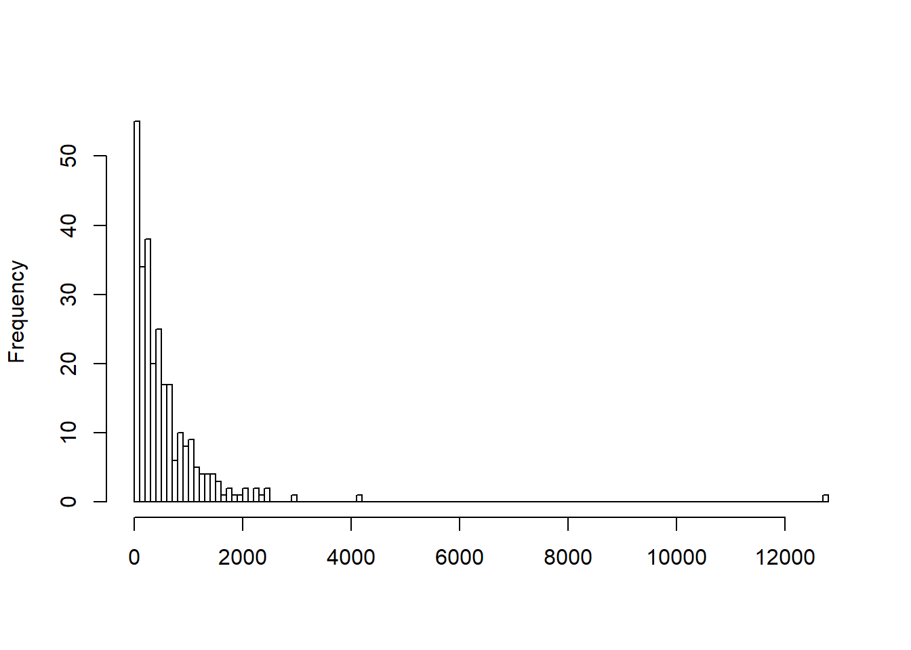

Chapter 3 Setting up an evaluation
We describe our methods in this chapter.
3.1 Statistical power, survey data and just doing it…
(???) Optimal Design software: http://hlmsoft.net/od/
3.1.1 Blocking
Consider a simple RCT regression (\(i=1,...N\)), with average treatment effect \(\gamma\) and idiosyncractic treatment effects \(\theta_{i}\), \(E[\theta_{i}]=0\): \[ Y_{i}=X_{i}\eta+D_{i}\gamma+D_{i}\theta_{i}+\epsilon_{i} \] Including covariates (ex post) or ``blocking" (ex ante), will reduce \(\text{var}[U_{i}]\) and therefore improve precision: \[ \text{var}[\widehat{\gamma}]=\frac{\text{var}[\epsilon_{i}]}{N\text{var}[D_{i}](1-R^{2}_{D|X})}=\frac{\text{var}[\epsilon_{i}]}{N\text{var}[D_{i}]} \]
3.1.2 Repeated observations
Add a time dimension \(t\): \[ Y_{it}=X_{it}\eta+D_{it}\gamma+D_{it}\theta_{i}+\lambda_{i}+\epsilon_{it} \] Gain in efficiency as long as \(\theta_{i}\perp\lambda_{i}\) Standard panel data formula: \[ \text{var}[\widehat{\gamma}^{B}]-\text{var}[\widehat{\gamma}^{W}]=2N^{-1}\text{var}[\lambda_{i}] \] Disadvantage of within-subject designs: treatment effects may be time-dependent (history / learning): \[ Y_{i2}=...+D_{i1}\gamma_{1}+D_{i2}\gamma_{2}+D_{i1}\theta_{i1}+D_{i2}\theta_{i2}... \]
3.1.3 Glossary and intuition
Type I error (\(p-\) value or significance level): probability of falsely rejecting the null hypothesis
Type II error: probability of falsely not rejecting the null hypothesis = \(1-\) power
Power: probability of correctly rejecting the null
Effect size: the magnitude of the treatment effect that you want to be able to detect
Notation: \(Y_{ij}|X_{i}\sim N(\mu_{j},\sigma^{2}_{j}),j=0,1\); covariates \(X_{i}\) have been “partialled out”
Intuition: \(\text{H}_0:\mu_{0}=\mu_{1}\ +\) explicitly specify \(\text{H}_1:\mu_{0}-\mu_{1}=\delta=\) Minimum Detectable Effect Size (MDES)
3.2 Stuff to keep in mind: Survey bias and Hawthorne effects
3.3 Illustration: Was my research design underpowered?
A very inexpensive RCT project I set up a few years ago in Senegal led to the following amusing paper: Arcand et al. (2011). I just came across the total budget in my files: $US 8,401. There also is a published version of the paper that you might want to look at to get more context, but which (reasonably, I think) recodes some of the missing observations to zeroes (which is why the sample size is slightly higher): Wagner et al. (2014). However, it uses an empirical specification I am no longer comfortable with, by adding combinations of quarter and region dummies to mop up residual variance —I guess that I am getting more severe with myself as I age…. Be that as it may, the results are very similar. The purpose of this exercise is to see (i) whether we were incredibly lucky in terms of the (lack of) power of our research design, and (ii) whether our results hold up to randomization inference. We got the power calculation wrong when we were planning the experiment, as you will see in the 2014 version of the paper.
Download the dataset: health_district1.dta. A short R file that will allow you to read in the data and appropriately define the outcomes and covariates is also provided: cnls1.R. There are various R packages for computing optimal sample size and doing power calculation for Poisson regressions available online. You will find that the negative binomial and Poisson results are not very different, but go with the negbin if you are uneasy with overdispersion. The classic reference on power calculations for Poisson regression is Signorini (1991), as well as the more recent paper by Channouf, Fredette, and MacGibbon (2014), for which R code is available at: http://neumann.hec.ca/pages/marc.fredette/Ajout\%20site\%20web.tx
# Set up the data
options(digits = 4)
library(foreign)
library(lmtest)
library(readstata13)
library(reshape)
library(multiwayvcov)
cnls.data <- read.dta("health_district1.dta")
attach(cnls.data)
##################
# Recode dummies
##################
# Quarter dummies
cnls.data$d1 <- ifelse(periode == "01/2008",1,0)
cnls.data$d2 <- ifelse(periode == "02/2008",1,0)
cnls.data$d3 <- ifelse(periode == "03/2008",1,0)
cnls.data$d4 <- ifelse(periode == "04/2008",1,0)
cnls.data$d5 <- ifelse(periode == "01/2009",1,0)
# Treatment status
# Control group is D1
cnls.data$D1 <- ifelse(treatment==1,1,0)
# Social mobilization is D2
cnls.data$D2 <- ifelse(treatment==2,1,0)
# Peer mentoring is D3
cnls.data$D3 <- ifelse(treatment==3,1,0)
# Combination of both treatments
cnls.data$D23 <- cnls.data$D2 + cnls.data$D3
cnls.data$num_hs <- factor(cnls.data$num_hs)
# Region dummies as a factor
cnls.data$num_reg <- factor(cnls.data$num_reg)
################################
# Define the response variables
# of choice --simply comment out
# the five others
################################
# Number of persons tested
cnls.data$y <- t
# Number of persons having
# benefitted from pre-test counselling
#y <-c_m
# Number of persons having picked up
# their test results
#y <-pick_m
# Number of persons who tested positive
# and who picked up their test results
#y <-pos_pick_m
# Number of persons who tested positive
# and whose partner has been tested
#y <-partner_m
# Number of persons who tested positive
# and who have followed post-test counselling
#y <-pos_couns_m
#######################
# Create clean dataset
#######################
y_lm <- lm(y ~ D2 + D3 + D23 + d1 + d2 + d3 + d4 + d5 + num_hs + num_reg, data=cnls.data)
clean <- model.frame(y_lm)
detach(cnls.data)
attach(clean) ;
summary(clean)## y D2 D3 D23
## Min. : 1 Min. :0.0000 Min. :0.0000 Min. :0.000
## 1st Qu.: 123 1st Qu.:0.0000 1st Qu.:0.0000 1st Qu.:0.000
## Median : 334 Median :0.0000 Median :0.0000 Median :0.000
## Mean : 570 Mean :0.0328 Mean :0.0693 Mean :0.102
## 3rd Qu.: 691 3rd Qu.:0.0000 3rd Qu.:0.0000 3rd Qu.:0.000
## Max. :12728 Max. :1.0000 Max. :1.0000 Max. :1.000
##
## d1 d2 d3 d4
## Min. :0.000 Min. :0.000 Min. :0.000 Min. :0.000
## 1st Qu.:0.000 1st Qu.:0.000 1st Qu.:0.000 1st Qu.:0.000
## Median :0.000 Median :0.000 Median :0.000 Median :0.000
## Mean :0.197 Mean :0.212 Mean :0.208 Mean :0.193
## 3rd Qu.:0.000 3rd Qu.:0.000 3rd Qu.:0.000 3rd Qu.:0.000
## Max. :1.000 Max. :1.000 Max. :1.000 Max. :1.000
##
## d5 num_hs num_reg
## Min. :0.00 2 : 5 10 :44
## 1st Qu.:0.00 4 : 5 1 :37
## Median :0.00 5 : 5 9 :36
## Mean :0.19 7 : 5 3 :29
## 3rd Qu.:0.00 8 : 5 4 :23
## Max. :1.00 9 : 5 2 :20
## (Other):244 (Other):85###########################################
# Create histograms of response variable
# and notice that it is highly left-skewed
###########################################
hist(clean$y,main="",xlab="",br=150)
##############################
# Estimate Poisson regressions
##############################
y_glm <- glm(clean$y ~ clean$D2 + clean$D3 + clean$d1 + clean$d2
+ clean$d3 + clean$d4 + clean$num_reg, poisson(link = "log"))
summary(y_glm)##
## Call:
## glm(formula = clean$y ~ clean$D2 + clean$D3 + clean$d1 + clean$d2 +
## clean$d3 + clean$d4 + clean$num_reg, family = poisson(link = "log"))
##
## Deviance Residuals:
## Min 1Q Median 3Q Max
## -55.41 -18.97 -7.78 6.80 174.71
##
## Coefficients:
## Estimate Std. Error z value Pr(>|z|)
## (Intercept) 6.94279 0.01015 684.10 < 2e-16 ***
## clean$D2 0.09637 0.01587 6.07 1.3e-09 ***
## clean$D3 0.63215 0.01377 45.90 < 2e-16 ***
## clean$d1 -0.06603 0.01105 -5.98 2.3e-09 ***
## clean$d2 0.43542 0.01028 42.36 < 2e-16 ***
## clean$d3 -0.11480 0.01099 -10.44 < 2e-16 ***
## clean$d4 0.06800 0.01084 6.27 3.5e-10 ***
## clean$num_reg2 -0.66401 0.01052 -63.10 < 2e-16 ***
## clean$num_reg3 -1.23322 0.01121 -109.97 < 2e-16 ***
## clean$num_reg4 -1.20194 0.01209 -99.40 < 2e-16 ***
## clean$num_reg5 -0.41039 0.00987 -41.57 < 2e-16 ***
## clean$num_reg6 -0.86088 0.01186 -72.56 < 2e-16 ***
## clean$num_reg7 -1.28012 0.01593 -80.35 < 2e-16 ***
## clean$num_reg8 -1.73091 0.01893 -91.45 < 2e-16 ***
## clean$num_reg9 -0.94112 0.00941 -100.03 < 2e-16 ***
## clean$num_reg10 -0.67698 0.00820 -82.53 < 2e-16 ***
## clean$num_reg11 -1.11526 0.01284 -86.89 < 2e-16 ***
## ---
## Signif. codes: 0 '***' 0.001 '**' 0.01 '*' 0.05 '.' 0.1 ' ' 1
##
## (Dispersion parameter for poisson family taken to be 1)
##
## Null deviance: 192976 on 273 degrees of freedom
## Residual deviance: 155000 on 257 degrees of freedom
## AIC: 157076
##
## Number of Fisher Scoring iterations: 6glm.vcovCL <- cluster.vcov(y_glm, clean$num_reg)
glm.clustered.se <- coeftest(y_glm, glm.vcovCL)
glm.clustered.se##
## z test of coefficients:
##
## Estimate Std. Error z value Pr(>|z|)
## (Intercept) 6.9428 0.2634 26.36 <2e-16 ***
## clean$D2 0.0964 0.3111 0.31 0.757
## clean$D3 0.6322 0.3315 1.91 0.057 .
## clean$d1 -0.0660 0.3566 -0.19 0.853
## clean$d2 0.4354 0.3860 1.13 0.259
## clean$d3 -0.1148 0.2078 -0.55 0.581
## clean$d4 0.0680 0.1990 0.34 0.733
## clean$num_reg2 -0.6640 0.0479 -13.87 <2e-16 ***
## clean$num_reg3 -1.2332 0.0540 -22.83 <2e-16 ***
## clean$num_reg4 -1.2019 0.0472 -25.48 <2e-16 ***
## clean$num_reg5 -0.4104 0.0220 -18.70 <2e-16 ***
## clean$num_reg6 -0.8609 0.0242 -35.51 <2e-16 ***
## clean$num_reg7 -1.2801 0.0183 -69.92 <2e-16 ***
## clean$num_reg8 -1.7309 0.0614 -28.21 <2e-16 ***
## clean$num_reg9 -0.9411 0.0255 -36.84 <2e-16 ***
## clean$num_reg10 -0.6770 0.0279 -24.22 <2e-16 ***
## clean$num_reg11 -1.1153 0.0403 -27.70 <2e-16 ***
## ---
## Signif. codes: 0 '***' 0.001 '**' 0.01 '*' 0.05 '.' 0.1 ' ' 1#############################################
# Test for difference between two treatments
#############################################
y_glm <- glm(clean$y ~ clean$D3 + clean$D23 + clean$d1 + clean$d2
+ clean$d3 + clean$d4 + clean$num_reg, poisson(link = "log"))
glm.vcovCL <- cluster.vcov(y_glm, clean$num_reg)
glm.clustered.se <- coeftest(y_glm, glm.vcovCL)
glm.clustered.se##
## z test of coefficients:
##
## Estimate Std. Error z value Pr(>|z|)
## (Intercept) 6.9428 0.2634 26.36 < 2e-16 ***
## clean$D3 0.5358 0.1450 3.70 0.00022 ***
## clean$D23 0.0964 0.3111 0.31 0.75676
## clean$d1 -0.0660 0.3566 -0.19 0.85311
## clean$d2 0.4354 0.3860 1.13 0.25934
## clean$d3 -0.1148 0.2078 -0.55 0.58062
## clean$d4 0.0680 0.1990 0.34 0.73250
## clean$num_reg2 -0.6640 0.0479 -13.87 < 2e-16 ***
## clean$num_reg3 -1.2332 0.0540 -22.83 < 2e-16 ***
## clean$num_reg4 -1.2019 0.0472 -25.48 < 2e-16 ***
## clean$num_reg5 -0.4104 0.0220 -18.70 < 2e-16 ***
## clean$num_reg6 -0.8609 0.0242 -35.51 < 2e-16 ***
## clean$num_reg7 -1.2801 0.0183 -69.92 < 2e-16 ***
## clean$num_reg8 -1.7309 0.0614 -28.21 < 2e-16 ***
## clean$num_reg9 -0.9411 0.0255 -36.84 < 2e-16 ***
## clean$num_reg10 -0.6770 0.0279 -24.22 < 2e-16 ***
## clean$num_reg11 -1.1153 0.0403 -27.70 < 2e-16 ***
## ---
## Signif. codes: 0 '***' 0.001 '**' 0.01 '*' 0.05 '.' 0.1 ' ' 1################################################################
# End of code
################################################################
# For perfect replicability of paper:
# Old code for calculating one-way clustered standard errors
# before the "multiwaycov" package was available
# Standard errors are almost identical
# See code by Mahmood Arai at http://people.su.se/~ma/clmclx.R
clx <- function(fm, dfcw, cluster) {
library(sandwich)
library(lmtest)
M <- length(unique(cluster))
N <- length(cluster)
K <- fm$rank
dfc <- (M/(M-1))*((N-1)/(N-K))
u <- apply(estfun(fm),2,function(x) tapply(x,cluster,sum))
vcovCL <- dfc*sandwich(fm,meat=crossprod(u)/N)*dfcw
coeftest(fm,vcovCL)
}
clx(y_glm,1,clean$num_reg)##
## z test of coefficients:
##
## Estimate Std. Error z value Pr(>|z|)
## (Intercept) 6.9428 0.2634 26.36 < 2e-16 ***
## clean$D3 0.5358 0.1450 3.70 0.00022 ***
## clean$D23 0.0964 0.3111 0.31 0.75676
## clean$d1 -0.0660 0.3566 -0.19 0.85311
## clean$d2 0.4354 0.3860 1.13 0.25934
## clean$d3 -0.1148 0.2078 -0.55 0.58062
## clean$d4 0.0680 0.1990 0.34 0.73250
## clean$num_reg2 -0.6640 0.0479 -13.87 < 2e-16 ***
## clean$num_reg3 -1.2332 0.0540 -22.83 < 2e-16 ***
## clean$num_reg4 -1.2019 0.0472 -25.48 < 2e-16 ***
## clean$num_reg5 -0.4104 0.0220 -18.70 < 2e-16 ***
## clean$num_reg6 -0.8609 0.0242 -35.51 < 2e-16 ***
## clean$num_reg7 -1.2801 0.0183 -69.92 < 2e-16 ***
## clean$num_reg8 -1.7309 0.0614 -28.21 < 2e-16 ***
## clean$num_reg9 -0.9411 0.0255 -36.84 < 2e-16 ***
## clean$num_reg10 -0.6770 0.0279 -24.22 < 2e-16 ***
## clean$num_reg11 -1.1153 0.0403 -27.70 < 2e-16 ***
## ---
## Signif. codes: 0 '***' 0.001 '**' 0.01 '*' 0.05 '.' 0.1 ' ' 1Carry out the correct power calculation that we should have done. Subject our results to randomization inference.
References
Deaton, Angus. 1997. The Analysis of Household Surveys. a Microeconomic Approach to Development Policy. Baltimore, MD: Johns Hopkins University Press.
List, John A. 2011. “Why Economists Should Conduct Field Experiments and 14 Tips for Pulling One Off.” Journal of Economic Perspectives 25 (3): 3–16.
Ranganathan, Aruna. 2018. “The Artisan and His Audience: Identification with Work and Price-Setting in a Handicraft Cluster in Southern India.” Administrative Science Quarterly 63 (3): 637–67.
Zwane, Alix Peterson, Jonathan Zinman, Eric Van Dusene, William Pariente, Clair Null, Edward Miguel, Michael Kremer, et al. 2011. “Being Surveyed Can Change Later Behavior and Related Parameter Estimates.” Proceedings of the National Academy of Sciences of the United States of America 108 (5): 1821–6.
Levitt, Steven D., and John A. List. 2011. “Was There Really a Hawthorne Effect at the Hawthorne Plant? An Analysis of the Original Illumination Experiments.” American Economic Journal: Applied Economics 3 (1): 224–38.
Arcand, Jean-Louis, Pape Alioune Diallo, Cheikhou Sakho, and Natascha Wagner. 2011. “HIV/Aids Sensitization, Social Mobilization and Peer-Mentoring: Evidence from a Randomized Experiment in Senegal.”
Wagner, Natascha, Jean-Louis Arcand, Cheikho Sakho, and Pape A. Diallo. 2014. “HIV/Aids Sensitisation and Peer Mentoring: Evidence from a Randomised Experiment in Senegal.” Journal of Development Effectiveness 6 (2): 147–66.
Signorini, David F. 1991. “Sample Size for Poisson Regression.” Biometrika 78 (2): 446–50.
Channouf, Nabil, Marc Fredette, and Brenda MacGibbon. 2014. “Power and Sample Size Calculations for Poisson and Zero-Inflated Poisson Regression Models.” Computational Statistics and Data Analysis 72 (Supplement C): 241–51. doi:https://doi.org/10.1016/j.csda.2013.09.029.